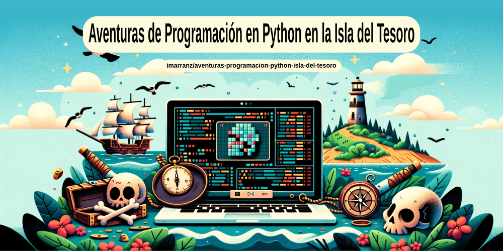

Introducción#

¿Por qué me he animado a escribir estas notas sobre programación en Python para niños? Todo viene del verano de 2023, estuvimos leyendo la Isla del Tesoro y cuando acabó el verano empezaron una extraescolar de programación y robótica en la que utilizan lenguajes como Scratch o Make Code. En ese momento pensé en crear materiales para seguir programando en casa usando Python y se me ocurrió unir la programación y los piratas para hacerlo más ameno a los niños siguiendo las aventuras de Jim Hawkins que teníamos recientes.
La verdad es que les gustó, no sé cuanta programación aprendieron pero les gustó. Y por eso comparto los materiales, para que cualquier pueda usarlos y adaptarlos a sus necesidades.
Breve Introducción a la Programación#
¡Bienvenidos a un emocionante viaje hacia el mundo de la programación y la aventura! En este libro, vamos a combinar dos cosas asombrosas: aprender a programar en Python y sumergirnos en la emocionante historia de "La Isla del Tesoro" y los intrépidos piratas.
¿Qué es la Programación?#
La programación es como enseñarle a una computadora cómo hacer tareas específicas. Es como darle instrucciones a una tripulación de piratas para que busquen un tesoro enterrado en una isla desierta. Pero, a diferencia de los piratas, las computadoras solo entienden un lenguaje muy especial: el lenguaje de programación.
¿Cómo Usar Este Libro?#
Cada capítulo te llevará un paso más cerca de convertirte en un hábil programador y aventurero. Seguiremos la historia de "La Isla del Tesoro" mientras aprendemos sobre variables, cadenas de texto, listas, funciones y más. No te preocupes si todo esto suena complicado en este momento; lo iremos desglosando en pequeños trozos de conocimiento que podrás asimilar fácilmente.
En cada capítulo de este libro, exploraremos el vasto océano de la programación en Python mientras seguimos la narrativa de Jim Hawkins y sus compañeros de tripulación. Como un buen capitán en una expedición, hay que asegurarse de que todos los miembros de la tripulación comprendan cada punto importante de la travesía. Es por eso que hemos designado un "Fondeadero" al final de cada sección. Aquí, en nuestro refugio seguro, resumiremos los conceptos clave que hemos explorado y reflexionaremos sobre cómo aplicarlos en nuestro viaje.
Así que, prepárate para zarpar hacia la isla del conocimiento y la aventura. ¡Es hora de explorar el emocionante mundo de la programación en Python inspirado en piratas! ¿Listo para izar las velas y comenzar esta travesía? ¡Vamos a ello!
Breve Introducción a Python#
¿Por qué Python?#
Python es un lenguaje de programación amigable y poderoso. Imagina a Python como tu fiel compañero en esta aventura de programación, listo para ayudarte a resolver desafíos y llevar a cabo tareas emocionantes. Al igual que un pirata necesita un mapa y una brújula, tú necesitas Python como tu herramienta principal en esta travesía.
En Python, puedes darle órdenes a la computadora usando palabras y frases en inglés, lo que lo hace fácil de aprender. A medida que avancemos en este libro, aprenderás a usar Python para crear tus propios programas y juegos inspirados en la historia de "La Isla del Tesoro".
Programación en Python: Un Vistazo Rápido#
La programación es como escribir un conjunto de instrucciones para que una computadora realice tareas específicas. Python es un lenguaje de programación que se destaca por ser legible y fácil de aprender. Vamos a sumergirnos en algunos conceptos básicos antes de comenzar nuestra aventura en la Isla del Tesoro.
Variables: Almacena Tus Tesoros Digitales#
En Python, las variables son como cofres del tesoro que utilizamos para almacenar información. Puedes pensar en ellas como etiquetas en las que colocas datos importantes. Por ejemplo, si quieres recordar la cantidad de monedas de oro que tienes, puedes crear una variable llamada oro y asignarle un valor, como:
oro = 100
Aquí, hemos almacenado el valor 100 en la variable oro. Más adelante, podrás usar este valor en tus programas.
Asignación de Valores: Llenando los Cofres#
La asignación de valores es la acción de guardar un valor en una variable. Usamos el símbolo = para hacer esto. Por ejemplo:
nombre = "Jim Hawkins"
Hemos asignado el nombre "Jim Hawkins" a la variable nombre. Ahora, cuando necesites referirte a este nombre en tu programa, simplemente usas nombre.
Funciones: Haciendo Cosas con Python#
Las funciones son como comandos mágicos que le indican a Python qué hacer. Aquí hay dos funciones importantes:
print(): Esta función se usa para mostrar información en la pantalla. Podemos imprimir mensajes, valores de variables y más. Por ejemplo:
print("Hola, piratas")
input(): Esta función nos permite ingresar datos desde el teclado. Podemos usarlo para hacer preguntas y obtener respuestas del usuario. Por ejemplo:
nombre = input("¿Cuál es tu nombre, pirata? ")
El código anterior te pedirá como usuario que ingreses tu nombre, y luego lo almacenará en la variable nombre.
Fondeadero#
El apartado fondeadero va a estar presente en todos los capítulos. Esta palabra la he rescatado del juego La Ruta del Tesoro, un juego tipo monopoly pero ambientado con piratas en el que si caías en la casilla fondeadero te podías llevar los reales que hubiera en la mesa. Y es que ese era el sentido del fondeadero, un lugar tranquilo donde los barcos podían echar el ancla y llevar a cabo arreglos en el barco y descansar. Y es lo que se hará en estos apartados, descansar y revisar lo aprendido.
Y lo que hemos aprendido en esta introducción es que Python es un lenguaje de programación versátil y fácil de aprender (al menos las instrucciones básicas). Las variables son como cofres para almacenar datos, la asignación de valores llena esos cofres y las funciones como print() y input() te permiten hacer cosas interesantes con tu programa. Ahora que hemos echado un vistazo rápido, estamos listos para emprender nuestra aventura en la programación en Python inspirada en "La Isla del Tesoro". ¡Continuemos con la búsqueda del tesoro digital!
Explicación de cómo ejecutar código Python en la consola de Linux#
Ejecutando Código Python en la Consola de Linux#
Ahora que hemos dado nuestros primeros pasos en el mundo de la programación en Python, es hora de aprender cómo tomar esas instrucciones que hemos creado y hacer que la computadora las ejecute. En Linux, la forma más común de hacerlo es a través de la consola o terminal. Aquí te explicaremos cómo hacerlo:
Paso 1: Abriendo la Consola
Para abrir la consola de Linux, sigue estos pasos:
-
Busca y abre la aplicación "Terminal" o "Consola" en tu sistema operativo. Puedes encontrarla en el menú de aplicaciones o usando la búsqueda.
-
Cuando la consola se abra, verás una ventana de texto en blanco esperando tus comandos. Esto es donde escribirás y ejecutarás tu código Python.
Paso 2: Escribiendo y Ejecutando Código Python
Una vez que tengas la consola de Linux abierta, puedes escribir código Python directamente. Aquí hay un ejemplo simple:
print("Hola, grumete")
-
Escribe el código Python en la consola tal como lo ves arriba.
-
Luego, presiona la tecla "Enter". Verás que la computadora ejecuta el código y muestra el resultado en la consola:
Hola, grumete
¡Felicidades! Has ejecutado tu primer programa Python en la consola de Linux.
Guardando y Ejecutando Archivos Python#
Si deseas escribir programas más largos o guardar tu código para futuros usos, puedes crear archivos Python. Aquí te mostramos cómo hacerlo:
- Abre un editor de texto, como "nano", "kate" o "vi", para escribir tu código. Por ejemplo, puedes usar el siguiente comando para abrir el editor "nano":
nano mi_programa.py
-
Escribe tu código Python en el editor de texto y guárdalo (generalmente, Ctrl + O en "nano").
-
Cierra el editor de texto (generalmente, Ctrl + X en "nano").
-
Ahora, puedes ejecutar tu programa Python desde la consola utilizando el comando:
python mi_programa.py
Reemplaza "mi_programa.py" con el nombre de tu archivo Python. La computadora ejecutará el código y mostrará cualquier resultado en la consola.
Fondeadero#
Así es como puedes ejecutar código Python en la consola de Linux. A medida que avancemos en este libro, escribirás programas cada vez más emocionantes y los ejecutarás en la consola para ver los resultados. ¡Estás listo para comenzar tu emocionante viaje de programación en Python inspirado en "La Isla del Tesoro"!